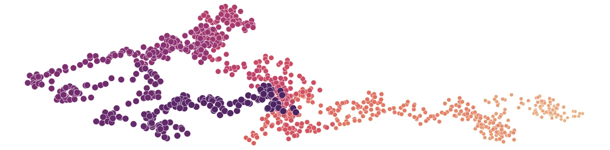
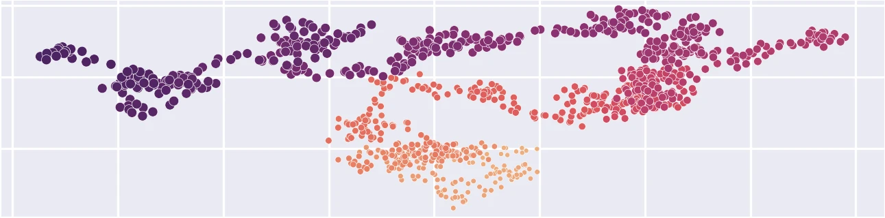
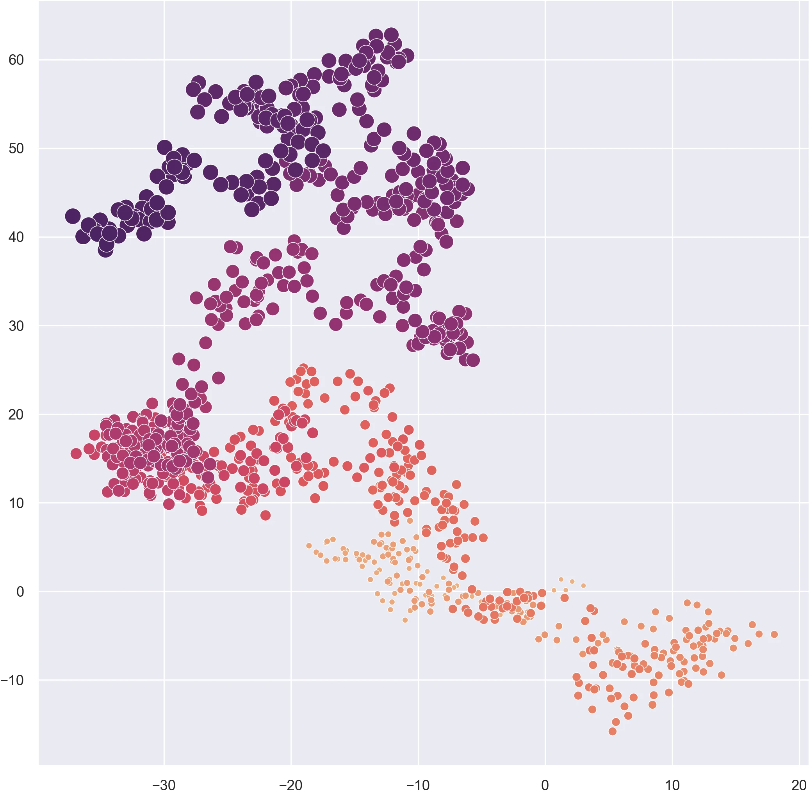
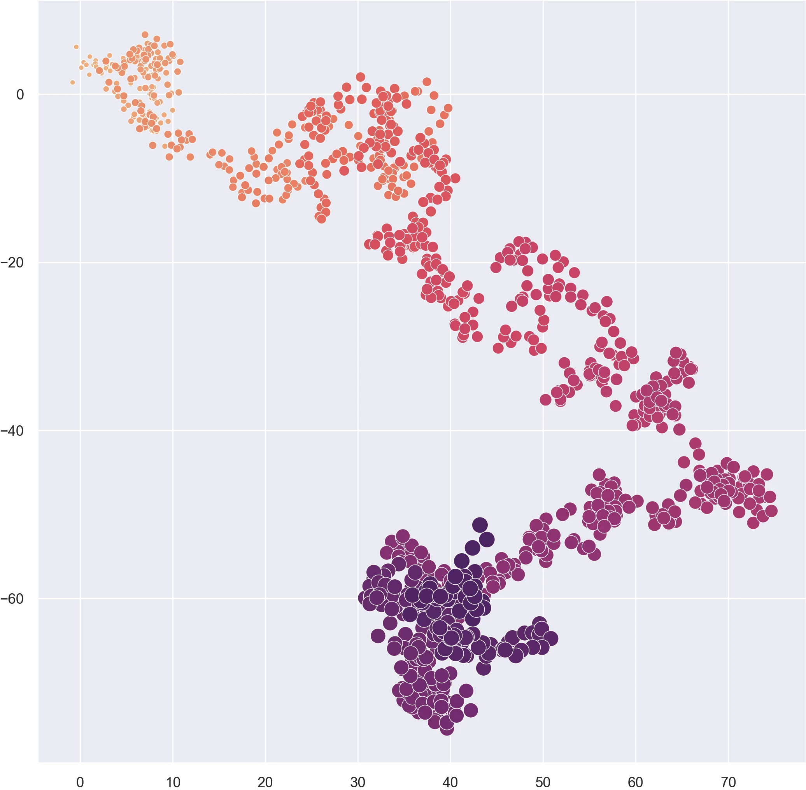
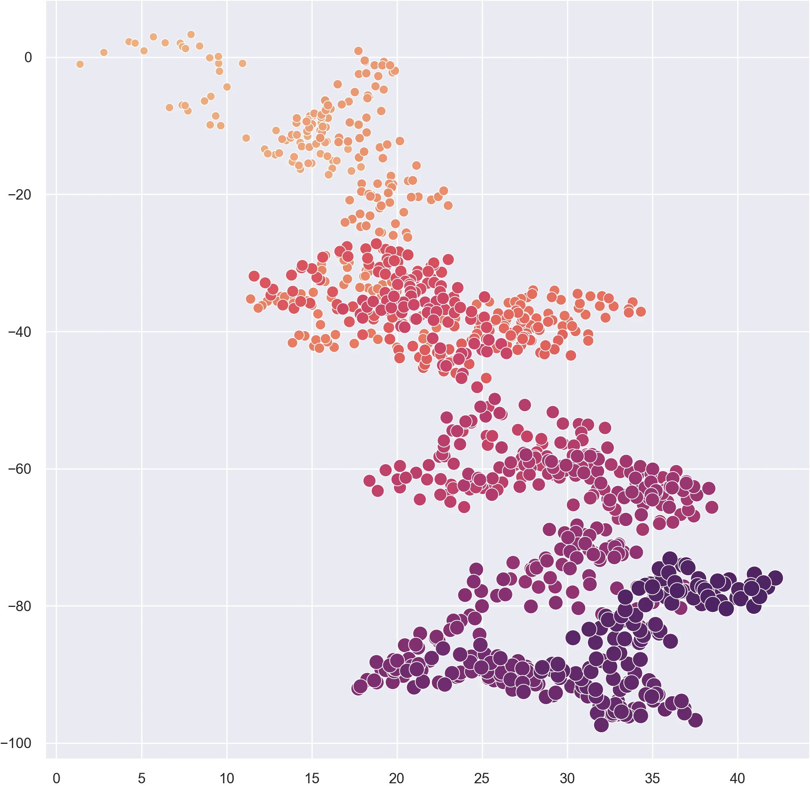
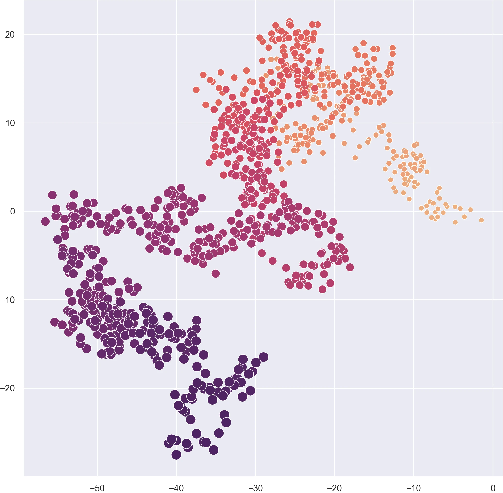

# Import libraries
import numpy as np
import seaborn as snsRandom walk with NumPy
tutorial
python
Program a 2D random walk using NumPy

Introduction
Learn how to generate a 2-dimensional random walk using Python’s NumPy library. A random walk is an algorithm that simulates random movement through space. Each step the walker takes is in random direction. Here we implement a random walk by generating sets of random direction vectors representing steps and then calculating the cumulative sum of the vectors to find the position of the walker at each step.
Import libraries
First import the required libraries NumPy and Seaborn. Numpy is a library for programming multidimensional arrays [1, 2] which we will use to generate the random steps in our walk. Seaborn is a library for statistical data visualization [3, 4] which we will use to plot our random walk.
Set theme
Set a theme for plotting with Seaborn using seaborn.set_theme. Try setting the style to darkgrid and the context to paper. See the Seaborn tutorial on aesthetics for a guide to customizing plots.
# Set theme
sns.set_theme(
context="paper",
style="darkgrid"
)Random steps
Generate a set of random direction vectors along the x-axis and another set of random direction vectors along the y-axis. These vectors represent the x- and y-direction of each step that the walker will take. First instantiate NumPy’s random number generator numpy.random.default_rng. Then generate an array of x-vectors drawn from a Gaussian (i.e. normal) distribution with numpy.random.Generator.normal. Set the location parameter representing the mean of the distribution to 0. Set the scale parameter representing the standard deviation or spread of the distribution to 0.25. Set the size parameter to the number of steps the walker will take. Now generate an array of y-vectors the same way.
# Set variables
i = 1000 # Iterations
mu = 0.0 # Mean
sigma = 0.25 # Standard deviation
# Instantiate random number generator
rng = np.random.default_rng()
# Generate random steps
u = rng.normal(mu, sigma, i)
v = rng.normal(mu, sigma, i)Solve position
Find the position of each step the walker takes by calculating the cumulative sum of the direction vectors with numpy.cumsum.
# Solve position
x = np.cumsum(u)
y = np.cumsum(v)Plot function
Use Seaborn to plot the x- and y-coordinates as a scatter plot with a size and color gradient representing relative time. Create a scatterplot with seaborn.scatterplot. Set x and y to the arrays of x- and y-coordinates. Use numpy.arange to generate an array of time steps. Set the size and hue parameters to this array of time steps. Use the palette parameter to assign a perceptually uniform color gradient such as flare or viridis.
# Plot function
plot = sns.scatterplot(
x=x,
y=y,
size=np.arange(i),
sizes=(25, 100),
hue=np.arange(i),
palette="flare",
legend=False
)




Random walks
References
[1]
Charles R. Harris, K. Jarrod Millman, Stéfan J. van der Walt, Ralf Gommers, Pauli Virtanen, David Cournapeau, Eric Wieser, Julian Taylor, Sebastian Berg, Nathaniel J. Smith, Robert Kern, Matti Picus, Stephan Hoyer, Marten H. van Kerkwijk, Matthew Brett, Allan Haldane, Jaime Fernández del Río, Mark Wiebe, Pearu Peterson, Pierre Gérard-Marchant, Kevin Sheppard, Tyler Reddy, Warren Weckesser, Hameer Abbasi, Christoph Gohlke, and Travis E. Oliphant. 2020. Array programming with NumPy. Nature 585, 7825 (September 2020), 357–362. https://doi.org/10.1038/s41586-020-2649-2
[2]
NumPy Developers. 2023. NumPy. Retrieved from https://numpy.org
[3]
Michael L. Waskom. 2021. Seaborn: Statistical data visualization. Journal of Open Source Software 6, 60 (2021), 3021. https://doi.org/10.21105/joss.03021
[4]
Michael L. Waskom. 2022. Seaborn: statistical data visualization. Retrieved from https://seaborn.pydata.org